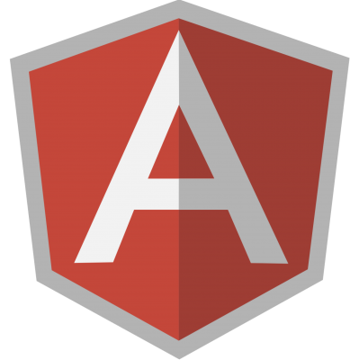
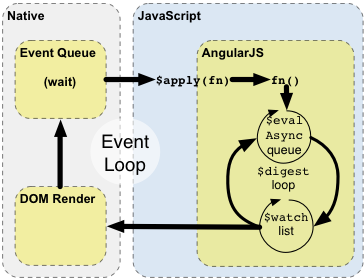

Data-binding in AngularJS
I'm Zach Snow
Hello.
<3

Inputs (and other things) →
Interpolations and directives (and other things) ←
AngularJS Runtime
-
Events
-
scope.$apply
-
scope.$digest
-
Render

Running example: Programming Languages
- Properties: name, description, ...
- Relations: related langauges
“Model"
View
Data-binding: Managing Complexity
“Lexical" scoping
“Bare" variables
get
- Current and parent scopes
set
- Current scope
- Visible to child scopes
- Not visible to parent scopes
“Dotted" variables
- (Can) reference parent scopes.
- Allows communication between sibling scopes, and from child to parent.
- Can get out of control (
$rootScope.someGlobalObject.allTheThings)
$eval / $apply runs on $scope
$digest runs on $rootScope
Identity Maps
A Useful Invariant
Identity maps + AngularJS === AWESOME
Identity Maps: The approach
The cache service
The cache service
Response Transformers
Running example: data model
Identity Maps: The payoff
Simple Stuff
Stale data
(it's a good thing)
- Check the cache for responses before hitting the server.
- If they exist, render immediately.
- When the newest data comes back, it will "pop" into place.
Extensions
-
Track delete specially, remove instances from relations.
-
"Deep" updates.
Obligatory
jobs@fareharbor.com
@zachsnowthatsme